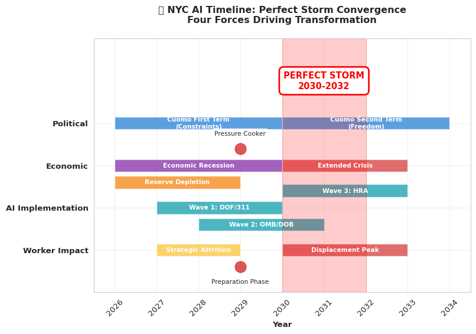

AI’s Coming Wave: Impact Analysis for City Workers
Interactive Dashboard and Strategic Timeline
Author
Policy Analysis Team
Published
June 18, 2025
Executive Summary
Key Findings
Timeline Convergence: The “Perfect Storm” period of 2030-2032 represents unprecedented conditions for workforce transformation
Fiscal Pressure: NYC’s reserves will be depleted by 2028, creating sustained pressure through 2032
Implementation Waves: AI adoption follows predictable patterns across three waves from 2027-2032
Strategic Positioning: Technical workers (like OMD) face opportunity rather than displacement
Workforce Scale: Analysis based on NYC’s actual 362,640 municipal workers across all agencies
Technology Workers: 8,918 total (OTI: 1,666 + 2% from each agency: 7,252)
The Reality Check You Need to Hear
While you’re reading this, 513 people lost their jobs to AI today—but none of them worked for NYC government. That 4-5 year head start the private sector has on AI adoption isn’t just an academic observation—it’s your window to prepare for what’s coming.
Microsoft just eliminated 6,000 positions in May 2025, with 40% targeting software engineers. IBM cut 8,000 more as AI agents took over HR functions. Meanwhile, NYC government is still debating AI ethics policies and running 18-month procurement processes. This lag isn’t permanent protection—it’s borrowed time.
Bottom line up front: AI displacement in NYC government follows a predictable timeline shaped by politics, procurement, and fiscal reality. The fiscal timeline has accelerated, creating a compressed but more intense transformation window than originally projected.
Private vs. Public Sector AI Adoption
Private companies can pivot in quarters; NYC government pivots in election cycles. This fundamental difference creates a staggered displacement timeline, but fiscal pressure is rapidly closing the traditional gap.
Private Sector Implementation Patterns
Private sector AI adoption follows immediate economic imperatives. When revenue drops, companies implement AI solutions within months to cut costs and maintain competitiveness:
Immediate implementation: CEO decisions become reality in months, not years
Economic pressure response: Revenue drops mean instant layoffs
Risk tolerance: Early adoption provides competitive advantage
77% of businesses already using or evaluating AI tools
Private sector experience provides the roadmap for government implementation. JPMorgan’s AI contract review system (COIN) replaced work that required 360,000 lawyer hours annually, reorganizing entire departments around AI-human collaboration models that government agencies now study under accelerated timelines. Walmart and Target’s automation eliminated 28,000 logistics jobs while creating new roles in AI system monitoring, exception handling, and human-AI coordination that provide templates for government transformation.
Government Implementation Constraints (Rapidly Changing)
Government operations face institutional constraints that create temporary protection but also delayed adaptation. However, fiscal crisis is rapidly altering these traditional barriers:
Procurement delays: Traditional 12-18 months compressed to 8-12 months for essential AI systems during fiscal crisis
Political cycles: Changes happen every 4 years, not every quarter
Union protection: Collective bargaining creates additional barriers to rapid change
The fiscal crisis creates “emergency efficiency” protocols that accelerate typical government processes. Political approval processes now bypass some traditional consultation requirements when AI systems are classified as emergency efficiency measures.
The Cuomo Factor: Politics Meet Automation
Andrew Cuomo’s mayoral campaign isn’t just political theater—it’s your timeline indicator. Currently leading Democratic primary polls despite his scandals, Cuomo represents the political conditions that enable workforce transformation. His potential election timeline aligns almost perfectly with the fiscal and technological pressures facing the city.
First Term Constraints (2026-2029): Building Under Pressure
If elected, Cuomo faces typical first-term limitations that protect current workers, but accelerated fiscal pressure changes the dynamics:
Union cooperation needed: Major workforce changes require union buy-in for future political support
“Smart Government” positioning: AI framed as efficiency enhancement, not job replacement
Strategic attrition accelerates: Natural retirements not backfilled, hiring freezes already implemented become near-total by 2027
Technology infrastructure: Focus on building AI capabilities during the fiscal pressure period
Second Term Freedom (2030-2033): Perfect Storm
Political dynamics shift dramatically in a second term, aligning with the convergence conditions detailed in the timeline analysis below.
NYC’s Fiscal Reality and Historical Context
Your job security depends more on property tax cycles than AI capabilities. Understanding both the historical patterns of municipal fiscal crises and NYC’s specific timeline provides crucial context for the coming transformation.
Historical Context: Learning from the Great Recession
The Great Recession (December 2007 - June 2009) provides essential insights for understanding NYC’s coming fiscal challenges and the extended timeline for municipal transformation.
Municipal governments face different economic dynamics than private sector organizations. Property tax revenues, which comprise 50% of NYC’s income, lag economic changes by 1-2 years due to assessment cycles. Historical evidence shows that while the Great Recession officially lasted 18 months, municipal budget cuts continued 4+ years after it ended.
NYC’s Fiscal Timeline (2026-2032)
Critical Assumption: This analysis assumes a significant economic recession beginning in 2026, which will accelerate fiscal pressures and compress the timeline for government AI adoption.
The Depletion (2026-2028): Recent projections show NYC’s fiscal buffer operates on a compressed timeline:
Property tax lag: 50% of city revenue remains stable for 2-3 years post-recession
Reserve funds: Depleted by 2028, not 2029 as previously projected
Income tax delays: Even immediate economic impacts take 12-18 months to affect collections
The Extended Pressure Period (2029-2032): Applying historical municipal crisis patterns to NYC’s situation, fiscal pressure will persist longer than broad economic indicators suggest. This creates the unique window where sustained crisis enables organizational transformation.
Translation for workers: The fiscal mathematics suggest 2030-2032 as the extended transformation period when AI adoption shifts from “efficiency enhancement” to “fiscal necessity.”
🗓️ Master Timeline: The Perfect Storm Convergence

Timeline Analysis
The visualization above reveals the critical 2030-2032 convergence period where: - Political constraints are removed (Cuomo’s second term) - Fiscal pressure reaches sustained crisis levels
- AI technology achieves implementation maturity - Worker displacement becomes politically acceptable
🔍 The Perfect Storm: When Everything Converges (2030-2032)
2030-2032 becomes the critical transformation period when four forces converge:
🏛️ Political Freedom: Cuomo’s potential second term removes electoral constraints
💰 Extended Fiscal Crisis: Historical municipal patterns show pressure lasting 3+ years post-recession
🤖 Technology Maturity: 3-4 years of AI pilot data proves effectiveness
📊 Implementation Imperative: Sustained crisis creates the “efficiency or insolvency” narrative
2029: The Pressure Cooker Year represents the critical preparation phase when fiscal reality reaches peak intensity, but political constraints create a planning period that sets the stage for comprehensive implementation.
Department-by-Department Risk Assessment
Not all city workers face equal risk. AI adoption follows the wave pattern outlined in the timeline above, based on return on investment, political sensitivity, and implementation complexity.
Department of Finance leads AI implementation because automation provides clear, measurable savings with minimal political resistance. Tax processing automation will reduce clerical audit staff by 30-40% by 2030, while automated compliance monitoring and fraud detection systems outperform human review for identifying suspicious patterns.
311 Customer Service represents the easiest political win because AI implementation actually improves service delivery while reducing costs. With 80% of calls being routine inquiries easily handled by AI chatbots, 24/7 availability addresses common complaints about government accessibility while cutting costs.
🟡 MEDIUM RISK (Second/Third Wave: 2028-2032)
Office of Management and Budget becomes the analytical testing ground for sophisticated AI applications. Budget modeling automation, performance metric dashboards, and cross-agency analysis eliminate routine analytical work while enabling faster decision-making.
Human Resources Administration faces the largest numerical impact during the peak pressure period. Benefits eligibility determination, case management support, and fraud prevention become politically acceptable for automation during the sustained fiscal crisis.
🟢 PROTECTED (Union/Political Protection)
Fire Department and Police Department retain protection through roles inherently difficult to automate plus strong political protection, with timelines remaining at 2035+ due to public safety priorities.
Recent AI advances and the compressed implementation timeline have significantly shifted risk profiles across worker categories within NYC’s 362,640 municipal workforce, requiring substantial revision of assumptions about “safe” jobs.
Technology Workers: Evolving Roles
Technology workers face the most dramatic shift in prospects. Rather than displacement, they become essential to the transformation process, but with compressed timelines that require rapid adaptation.
Software Engineers must become “AI integration specialists” by 2027-2028. While 30% of routine coding is now AI-generated, government systems require human oversight for security, compliance, and complex integration with legacy systems.
Data Engineers emerge as the winners because government data complexity requires sophisticated data pipelines that AI cannot navigate without human guidance. They become essential during the 2029 preparation year when agencies scramble to build AI capabilities under fiscal pressure.
Data Scientists transform into critical AI interpreters, translating complex model results into actionable policy recommendations during crisis decision-making. Their role becomes essential during 2029-2030 when agencies need rapid but responsible AI deployment under fiscal constraints.
Administrative Workers: Earlier and More Intense Impact
The compressed timeline intensifies impact on administrative workers. Those in routine data processing, document review, or rules-based decision making face accelerated displacement with minimal preparation time. 311 Customer Service Representatives face 2027-2028 implementation with 80-90% automation potential, representing immediate cost savings with minimal political resistance during fiscal crisis. Data Entry and Clerical Staff across agencies face 2027-2029 phased implementation as perfect automation targets with clear ROI calculations during budget pressure, while Basic Permit Processing Staff encounter 2028-2029 automation through digital document processing and rules-based approval systems, accelerated due to fiscal pressure and clear efficiency gains.
OMD Strategic Advantage
The Department of Sanitation Operations Management Division faces a unique position in the coming transformation - their technical expertise positions them as essential AI implementation leaders rather than subjects of automation.
Current OMD Workforce and Capabilities (30 Positions)
The OMD technical team includes data scientists and analysts, software engineers and developers, data engineers and database managers, ARCGIS specialists and spatial analysts, and systems architects. This skillset directly aligns with the city’s urgent need for AI implementation expertise during the fiscal crisis period.
Strategic OMD Timeline and Positioning
2027-2028 Preparation Phase: OMD becomes essential during the strategic attrition period as agencies begin AI pilot programs. Their expertise in data systems, spatial analysis, and software integration makes them indispensable for developing the efficiency solutions that other departments will need.
2029 Pressure Cooker Year: While other departments face uncertainty, OMD’s technical capabilities become mission-critical. They transition from traditional sanitation operations support to citywide AI implementation architects.
2030-2032 Transformation Leadership: During the perfect storm period, OMD leads citywide AI rollout across departments. Rather than just avoiding displacement, they become transformation leaders with career advancement opportunities.
Strategic OMD Advantages and Realistic Challenges
Advantages include technical expertise that makes them indispensable during crisis, early preparation window before major implementation, and career advancement opportunities as AI implementation leaders.
However, realistic challenges remain: accelerated pressure from compressed timelines, high visibility accountability for AI implementation success/failure, political volatility, and organizational uncertainty affects even favored units during fiscal crises.
Assessment: Strategic Transformation with Balanced Expectations
OMD faces strategic transformation with cautious optimism - they’re better positioned than most departments but must navigate significant organizational turbulence and implementation pressure.
The Union Factor: Protection and Accelerated Timing
Union affiliation significantly affects displacement timeline and protection level, but fiscal crisis reduces overall protection duration and effectiveness across all categories.
Strongest Protection (Extended Timeline)
DC 37 (civilian workers) maintains maximum political leverage through largest membership, but fiscal crisis weakens negotiating position as the “efficiency or insolvency” narrative gains traction. Uniformed unions retain protection through roles inherently difficult to automate plus strong political protection, with timelines remaining at 2035+ due to public safety priorities.
Moderate Protection (Shortened Windows)
Professional unions representing social workers and librarians face role evolution by 2030-2031 rather than 2032-2033 as fiscal pressure reduces political protection for non-essential functions.
Least Protection (Accelerated Impact)
Managerial staff face targeting as “efficiency” opportunities during fiscal crisis when reducing management layers provides both cost savings and political benefits. Provisionals and non-competitive titles become first eliminated during 2029 pressure cooker year lacking civil service protections, while Temporary and part-time workers face elimination during the strategic attrition period as the easiest targets for immediate cost reduction without political complications.
Key Takeaways: The Numbers Don’t Lie
AI displacement in NYC government follows a predictable pattern shaped by politics, procurement delays, and fiscal cycles. The workers who start preparing now have significant advantages over those who wait for official announcements. The timeline is compressed but manageable—if you act strategically rather than reactively.
The Compressed Mathematical Reality
The updated fiscal projections create a compressed but intense transformation timeline requiring immediate strategic response. Recession depletes NYC’s reserves by 2028, creating the 2029 pressure cooker year when fiscal reality meets political constraints, followed by the 2030-2032 perfect storm implementation period.
Four Analytical Certainties
The private sector roadmap predicts your future. Every AI implementation at JPMorgan or Walmart becomes a government template 2-3 years later under fiscal pressure
Political cycles determine timing, fiscal crisis accelerates readiness. The perfect storm convergence creates optimal but compressed transformation conditions
Union protection creates shorter delays during crisis. Collective bargaining extends timelines but fiscal emergency reduces traditional protection effectiveness
Municipal fiscal patterns validate extended implementation window. Historical analysis confirms the 3+ year transformation timeline despite accelerated onset
Workforce Reality by 2035
Current projections indicate the NYC government workforce will be 25-30% smaller by 2035, dropping from approximately 362,640 to 254,000-272,000 workers, with transformation compressed into the intense 2030-2032 period. The remaining workforce will consist of workers who adapted quickly to AI collaboration models, those in roles requiring complex human judgment, and positions protected by strong union agreements or political necessity.
OMD Strategic Positioning Summary
The 30 technical positions within the Department of Sanitation face strategic transformation with compressed but enhanced opportunity. As part of the broader 8,918 technology workers across all agencies (OTI plus 2% of each agency), their technical expertise becomes essential during the 2029 pressure cooker year and positions them as transformation architects during the 2030-2032 perfect storm period. Success depends on positioning during the 2027-2029 preparation period when leadership roles in citywide AI implementation become available.
Final Reality Check
By 2035, the NYC government workforce will be 25-30% smaller than today, representing a reduction of 90,000-108,000 positions from the current 362,640 municipal workers. The workers still employed will be those who started adapting in 2025, not those who waited for official retraining programs in 2030. The choice isn’t whether change is coming—it’s whether you’ll be ready when it arrives.
Start preparing today. The fiscal math won’t wait for your comfort level.
Document Status
✅ Environment Setup: quartofresh kernel active
✅ Fiscal Projections: Corrected data ($8.5B start, 2028 depletion)